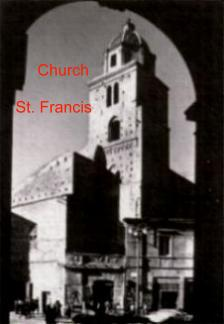
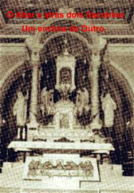
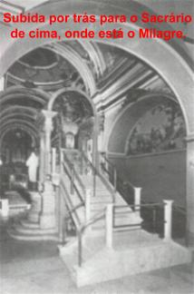
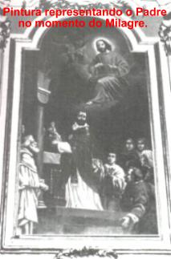

A misericórdia do
SENHOR é muitão grande e se manifesta com a intenção primordial de
salvar e converter todos os seus filhos. E justamente com este propósito,
o CRIADOR providenciou as Manifestações Sobrenaturais, porque quer
através delas, oferecer mais uma oportunidade de conversão às pessoas
que são frias e que não acreditam em seu Amor e na sua Divina Amizade.
A misericórdia do
SENHOR é muitão grande e se manifesta com a intenção primordial de
salvar e converter todos os seus filhos. E justamente com este propósito,
o CRIADOR providenciou as Manifestações Sobrenaturais, porque quer
através delas, oferecer mais uma oportunidade de conversão às pessoas
que são frias e que não acreditam em seu Amor e na sua Divina Amizade.
São conhecidas mais de cinco dezenas de Milagres Eucarísticos acontecidos em diversos países, desde o século VIII até nossos dias. Cada acontecimento é bem diferente um do outro, e cada história é a mais bonita e a mais fascinante. Isto porque, tudo o que se relaciona com a Santa Eucaristia indubitavelmente tem um valor incomensurável. Por essa razão, como o nosso espaço é pequeno, vamos realçar apenas algumas, para sedimentar em todos os corações a certeza da seriedade do assunto, da beleza do conteúdo e, sobretudo, da realidade que é a Sagrada Comunhão. A Eucaristía é o Corpo, Sangue, Alma e Divindade do próprio DEUS, Vivo e Verdadeiro, que permanece junto de nós, disponível em todos os sacrários do mundo, propiciando felicidade e bem-estar nesta vida e ensejando a todos os seus filhos, um cantinho na eternidade, no seu magnífico Reino de Amor.

"LANCIANO, Itália, ano 700"
Lanciano é uma pequena cidade medieval, banhada pelo Mar Adriático, na Itália, entre as cidades de San Giovanni Rotondo e Loreto.
Antigamente a denominavam de “Anxanum”. A mudança de nome foi
com a finalidade de perpetuar uma homenagem à Longino, que segundo a Tradição nasceu
lá e foi o Centurião romano que cravou a sua lança no flanco direito de JESUS Crucificado,
alcançando o Coração do Redentor, para ver se ELE ainda 
Na seqüência dos acontecimentos, a sua vida começou a se transformar, despertando o seu espírito e o conduzindo pelo caminho da conversão. DEUS perdoou o seu abominável sacrilégio e ele, ao longo de sua existência, procurou cultivar a sua amizade e seu amor ao SENHOR JESUS, o qual nasceu e cresceu de maneira bonita e corajosa. A Igreja reconhece a sua notável transformação espiritual que o santificou e o colocou entre os Santos do SENHOR. É conhecido como São Longino e sua imagem está no Vaticano, no Santo Sepulcro em Jerusalém e em diversos outros altares do mundo. Sua Festa é comemorada no dia 15 de Março.
Na época em que aconteceu o Milagre que vamos focalizar, a Igreja de Lanciano estava entregue a proteção dos Santos Legonciano e Domiciano, e era administrada pelos Monges Basilianos do Rito Grego Ortodoxo.
Um Monge da Ordem de São Basílio (Basiliano), sábio nas coisas do mundo, mas contudo, vacilava nas coisas da fé. Atravessava um terrível período de perturbação espiritual e de tal ordem, que o levava a duvidar da presença Real de NOSSO SENHOR JESUS CRISTO na Hóstia e no Vinho Consagrados. Todavia, ele lutava contra aquela abominável tentação e rezava, suplicando ao CRIADOR que iluminasse o seu espírito e o livrasse daquela dúvida cruel e do medo que envolvia a sua consciência, que o fazia imaginar estar perdendo a sua vocação sacerdotal e sua fé. Mas ele era um homem fraco, não conseguia dominar a sua vontade, à medida que passavam os dias, aquele drama interior aumentava de intensidade e afetava a sua disposição, roubando-lhe até o prazer de viver.
Por outro lado, a situação do mundo naquela época não lhe favorecia em nada, para ajudá-lo a fortalecer sua fé. Havia muitas heresias disseminadas em todas as partes, as quais eram acolhidas por leigos e pessoas da Igreja. Diversos Bispos e alguns Sacerdotes aceitavam aquelas doutrinas sem uma maior e mais profunda reflexão. Então imperava uma terrível confusão de idéias, que deixavam dúvidas nas mentes dos fieis e religiosos, resultando um grande mal-estar e incompreensões no seio da Igreja.
Certa manhã, como habitualmente fazia, estava celebrando
a Santa Missa, quando foi acometido por uma incontrolável onda de dúvidas. Envergonhado
consigo mesmo, com um olhar de piedade, contemplou a Hóstia e o Vinho que estavam a
sua frente e que ele começara a rezar a Consagração. De súbito, suas mãos tremeram e seu
corpo foi envolvido por uma vigorosa e profunda emoção.  Permaneceu imóvel, em
silêncio, de costas para o povo (como as Missas eram celebradas antigamente).
Depois de alguns minutos, voltando-se para os fieis que não sabiam o que acontecia
e aguardavam com expectativa e ansiedade, falou:
Permaneceu imóvel, em
silêncio, de costas para o povo (como as Missas eram celebradas antigamente).
Depois de alguns minutos, voltando-se para os fieis que não sabiam o que acontecia
e aguardavam com expectativa e ansiedade, falou:
“Ó testemunhas afortunadas, a quem o Santíssimo DEUS, para destruir a minha falta de fé, quis revelar-SE a SI Mesmo neste Bendito Sacramento e fazer-SE visível diante de nossos olhos. Venham irmãos, venham todos e maravilhem-se com o nosso DEUS tão próximo de nós. Venham contemplar a Carne e o Sangue de nosso Amado CRISTO”.
A Hóstia tinha se transformado em Carne e o Vinho convertido em Sangue do SENHOR.
As pessoas presenciando o Milagre ficaram emocionadas e surpresas, repletas de alegria pela infinita bondade Divina em lhes proporcionar tão extraordinária manifestação. Por isso, clamavam perdão e misericórdia para as suas vidas, declarando-se indignas de presenciarem tão grandioso e comovente Milagre.
Com o avançar das horas, quando retornaram às suas casas, divulgaram a auspiciosa notícia por onde passavam. Em pouco tempo, toda a cidade ficou sabendo da notável manifestação sobrenatural e afluíram à Igreja, centenas e milhares de pessoas, que superlotaram todas as dependências do templo cristão, porque todos estavam ávidos de verem o Corpo e o Sangue de JESUS.
O Milagre ocorreu no ano 700 de nossa era e causou um efeito admirável, porque atuou preponderantemente sobre a crença daquele Sacerdote Basiliano convertendo o seu coração e de muitas pessoas frias e indiferentes, que não acreditavam na Sagrada Eucaristia, na presença Real de JESUS, com o Seu Corpo, Sangue, Alma e Divindade, na Hóstia e no Vinho Consagrados.
É importante destacar que desde a data do acontecimento, a Igreja acolheu o Milagre como “um verdadeiro Sinal do Céu” e venerou o Corpo e o Sangue do SENHOR nas procissões que anualmente são realizadas no dia da Festa, ultimo domingo do mês de Outubro.
Inicialmente o Milagre foi conservado num artístico relicário de marfim. Posteriormente foi colocado num magnífico Ostensório de ouro.
O Sangue do SENHOR no momento do Milagre, coagulou em cinco porções, como se fossem cinco pelotas. Elas guardam uma incrível propriedade: cada bola de sangue coagulado tem o mesmo peso que as outras quatro juntas.
O Sangue adquiriu uma cor marrom-sépia. A Carne ficou
com  uma cor grená-escuro. Entretanto, quando se coloca uma lâmpada por trás, ela adquire
uma cor rosada.
uma cor grená-escuro. Entretanto, quando se coloca uma lâmpada por trás, ela adquire
uma cor rosada.
A Igreja de Lanciano permaneceu sob a custódia dos Monges de São Basílio até 1176, quando assumiram os Padres Beneditinos e permaneceram até 1252. A seguir vieram os Franciscanos e tiveram que fazer muitas obras, porque a estrutura do templo estava comprometida.
Em 1258, os Franciscanos construíram uma nova Igreja, no local da antiga, e a colocaram sob a proteção de São Francisco.
Em 1515 o Papa Leão X implantou em Lanciano uma sede episcopal e em 1562, o Papa Pio IV emitiu uma Bula elevando a condição de sede Arcepiscopal.
Em 1887 o Arcebispo de Lanciano, Monsenhor Petrarca, obteve do Papa Leão XIII, indulgência plenária perpétua para quem visitasse o Milagre Eucarístico no período da Festa, último domingo de Outubro e nos seguintes oito dias da oitava, em cujo período transcorre as celebrações em honra do Sangue e do Corpo do SENHOR.
Em 1566, com a ameaça de invasão pelos turcos, Frei Giovanni Antônio de Mastro Renzo que era o pároco, e seus companheiros, construíram uma Capela especial e bem protegida, a Capela Valsecca, onde o Milagre de JESUS Eucarístico foi abrigado com segurança. Ali permaneceu até o ano 1902, quando construíram um magnífico Altar com dois Tabernáculos: no superior, colocaram o Ostensório Especial com o Milagre e no inferior, está o Sacrário com as Hóstias Consagradas nas Santas Missas, para serem consumidas pelos fieis. Pela parte de trás do Altar, tem uma pequena escada de acesso, por onde as pessoas podem subir e admirar bem de perto o Ostensório com o extraordinário Milagre.
A emoção da visita é sempre grande e proporciona
manifestações  espontâneas que atestam à admiração e a comoção
das pessoas, diante do próprio DEUS.
espontâneas que atestam à admiração e a comoção
das pessoas, diante do próprio DEUS.
Ao longo dos séculos, muitas pesquisas foram feitas com a Carne e o Sangue do Milagre Eucarístico. As investigações modernas foram concluídas em 1970 e atestaram:
1 – A Carne é verdadeira carne humana.
2 – A Carne é um pedaço do tecido muscular do coração (miocárdio).
3 – O Sangue também é humano.
4 – A Carne e o Sangue têm o mesmo tipo sanguíneo:“AB”.
5 – No Sangue encontram-se proteínas na mesma proporção que se encontra num sangue humano vivo.
6 – No Sangue também se encontram sais minerais em proporções idênticas as encontradas num ser humano normal: dosagem do cloro, fósforo, magnésio, potássio, sódio e do cálcio.
7 – A preservação da Carne e do Sangue durante 12 séculos, sem a ajuda de qualquer conservante ou ingrediente químico, é perfeita e admirável.




“SANTARÉM, Portugal, ano 1247”
 Entre os anos 1225 e 1247, havia uma
mulher em Santarém que se sentia muito infeliz, porque o seu marido lhe era
infiel. Querendo salvar o seu casamento, ouviu a sugestão de pessoas amigas
e procurou a orientação e o serviço de uma feiticeira.
Entre os anos 1225 e 1247, havia uma
mulher em Santarém que se sentia muito infeliz, porque o seu marido lhe era
infiel. Querendo salvar o seu casamento, ouviu a sugestão de pessoas amigas
e procurou a orientação e o serviço de uma feiticeira.
A bruxa logo lhe prometeu sucesso, dizendo que ia mudar a conduta de seu marido, isto se ela seguisse as suas recomendações. Pediu que a mulher levasse uma Hóstia Consagrada. Diante do espanto da mulher, a feiticeira lhe instruiu dizendo que fingisse uma enfermidade e comunicasse a sua doença a Igreja, assim ela seria autorizada a receber a Comunhão durante a semana e teria a oportunidade de levar a Hóstia Consagrada para ela fazer o trabalho.
A mulher ficou aterrorizada, porque sabia que aquele pedido era um sacrilégio. Por isso, permaneceu em silêncio, não disse nada. Saiu da presença da bruxa e por longo tempo não voltou, ficou pensando naquele pedido estranho e tentava solucionar a dúvida que afligia o seu coração.
Por fim, imaginando a possibilidade de converter o marido e alcançar a sonhada felicidade que buscava para a sua vida matrimonial, decidiu e inventou uma grande mentira. Contou ao sacerdote que estava muito doente e precisava receber JESUS no Santíssimo Sacramento. O pároco concedeu a licença e ela foi receber a Sagrada Comunhão na Igreja de São Esteves.
No momento da Comunhão, ela estava visivelmente emocionada e com um imenso drama de consciência. Ao receber JESUS Sacramentado na língua, não consumiu a Hóstia. Guardou-a e deixou a Igreja imediatamente, seguindo em direção a casa da feiticeira. Contudo a Partícula Sagrada começou a sangrar. Várias pessoas que passavam por ela na rua, notaram manchas de sangue em sua roupa e pensaram que ela estivesse com algum problema de saúde, talvez com uma hemorragia... Diante do acontecido, o medo tomou conta de seu coração. Decidiu não continuar com o projeto. Levou a Hóstia Consagrada para casa, envolveu-a num lenço bem limpo e completou a proteção com um tecido de linho branco. Depois, a colocou num baú que possuía no quarto de casal.
Todavia, durante a noite ela e o marido foram acordados por uma radiação clara e brilhante que vinha do baú e iluminava inteiramente o quarto. Espantados e comovidos, viram dois Anjos abrirem o baú e libertaram NOSSO SENHOR EUCARÍSTICO daquela prisão. Sem palavras e admirados com aquele fato, viram o baú aberto, o tecido de linho arrumado e a pequena Hóstia branca bem no meio do lenço aberto. E diante daquela realidade, chorando e arrependida pelo pecado cometido, a esposa contou ao marido a verdade sobre o acontecido. Ambos chorando e emocionados passaram a noite de joelhos rezando diante NOSSO SENHOR EUCARÍSTICO, suplicando perdão por aquele terrível desatino. E assim então permaneceram em estado de vigília e de adoração.
Na manhã do dia seguinte, apareceram na residência do casal diversas pessoas. Elas foram atraídas por lampejos e brilhos como se fossem pequenos relâmpagos, que saíam do telhado da casa. Repletas de curiosidade foram até o local para saber o que estava acontecendo. Foi então que conheceram o fato, narrado pela voz emocionada do casal e assim, testemunharam o notável milagre.
Um padre foi convidado a comparecer e levou a Hóstia Consagrada em procissão para a Igreja. Por ordem superior, a Partícula foi colocada num recipiente e lacrada com cera de abelha.
Dezenove anos depois aconteceu outro milagre. Um outro sacerdote abrindo o Tabernáculo notou que o recipiente cristalino que guardava aquela Hóstia, que foi lacrado com cera de abelha, estava com o lacre quebrado e a Partícula Sagrada tinha se transformado em Sangue do SENHOR, que estava visível dentro do recipiente cristalino fechado.
As autoridades eclesiásticas em respeito, objetivando homenagear a Manifestação Divina, encomendaram um precioso Relicário onde colocaram o Milagre, que se mantém na Igreja do Santo Milagre, a visitação e veneração dos fieis.
Desde aquela época até hoje, todos os anos, no segundo domingo do mês de Abril, o Relicário em procissão, percorre as ruas de Santarém, até a casa onde morava aquela mulher. Na mencionada casa, transformada em Capela Diocesana, construíram um bonito e respeitoso Altar.

“SEEFELD, Áustria, ano 1384”
 Na diocese de Innsbruck, entre as montanhas
arborizadas da província do Tyrol, na aldeia de Seefeld, Áustria, a Paróquia de São
Oswaldo deve sua popularidade a um milagre que aconteceu na quinta-feira Santa
do ano 1384.
Na diocese de Innsbruck, entre as montanhas
arborizadas da província do Tyrol, na aldeia de Seefeld, Áustria, a Paróquia de São
Oswaldo deve sua popularidade a um milagre que aconteceu na quinta-feira Santa
do ano 1384.
Naquela época o senhor Knight Milser era o guardião do Castelo de Schlossberg, localizado ao norte do lugarejo. O castelo foi estrategicamente construído para proteger uma importante estrada de acesso e servir como uma fortaleza, para defender os moradores da localidade. O senhor Knight sempre se mostrou orgulhoso da posição que ocupava e de sua autoridade. Por isso mesmo, estava sempre em evidência, nas colunas sociais e nos albergues de maior freqüência. Todos os fatos que aconteciam com ele ou com pessoas aparentadas, ou de sua relação de amizade, forçosamente eram publicados no jornal da comunidade: A Crônica Dourada de Hohenschwangau.
Certa manhã, ele foi com alguns de seus seguidores a Igreja Paroquial. Cercou o Padre e a congregação com homens bem armados. Por sua autoridade, exigiu do sacerdote que ia celebrar a Santa Missa, comungar com a Hóstia grande, aquela utilizada pelo Padre na cerimônia. Segundo ele, a Hóstia pequena tinha pouco valor. O Padre sentindo-se pressionado ficou apreensivo, porque recusar um pedido ao senhor Knight poderia significar a morte.
No momento da Comunhão, o profanador com a espada puxada e a cabeça coberta, estacionou à esquerda do altar e ali permaneceu. O Padre vendo aquela ameaça lhe deu a Hóstia Grande Consagrada.
No mesmo momento em que o senhor Knight a colocou na boca, impressionantemente o solo se abriu embaixo de seus pés, fazendo com que ele se afundasse até os joelhos. Assustado e com uma palidez mortal, quis sair dali; segurou no Altar com decisão, com ambas as mãos como se segurasse numa taboa de salvação, e tanto esforço fez que suas impressões digitais ficaram gravadas na mesa do Altar e podem ainda hoje serem vistas. Mesmo assim, não conseguiu sair daquele lugar.
Cheio de terror, implorou ao Padre para remover a Hóstia Consagrada que estava em sua boca, porque ele também não a conseguia engolir, ela estava lhe sufocando. O sacerdote se aproximou dele e assim que retirou a Sagrada Espécie, o chão ficou firme novamente. A Hóstia retirada da boca do senhor Knight estava totalmente vermelha, impregnada com o Sangue de JESUS.
O profanador aflito, logo que conseguiu sair daquela posição incômoda, apressou-se em chegar ao Mosteiro de Stams, onde chamou um sacerdote e arrependido, confessou os seus muitos pecados.
A partir daquele dia, mudou o seu comportamento e o seu proceder, vivendo uma existência santa, dedicada as orações, aos exercícios de penitência e também, ajudando aos mais necessitados da comunidade.
Morreu dois anos após e conforme o seu desejo, foi enterrado numa área próxima a capela do Santíssimo Sacramento do Mosteiro. O manto aveludado que usava durante a Santa Missa naquela quinta-feira Santa que ocorreu o Milagre, mandou cortar e fazer uma casula sacerdotal, a qual doou ao Mosteiro de Stams. A Hóstia do Milagre foi guardada num Cibório por determinação da autoridade eclesiástica, até a confecção de um belíssimo Relicário de Prata em estilo gótico, muito bonito, também encomendado pelo convertido.
 A relíquia sagrada é preservada
até hoje na Igreja de São Oswaldo e está disponível a visitação pública.
A relíquia sagrada é preservada
até hoje na Igreja de São Oswaldo e está disponível a visitação pública.
Na cena do milagre ainda é mantido o buraco no piso, onde o senhor Knight afundou até os joelhos. Por motivo de segurança, o buraco foi coberto com um grelha de ferro para evitar que alguém distraidamente caísse nele. Entretanto a grelha pode ser removida e assim, as pessoas que desejarem, podem examinar minuciosamente o interior do buraco.
O Altar de pedra, onde aconteceu o Milagre, está localizado na sua posição original. Ficou um pouco distante do Altar Novo que é mais alto e foi construído quando a Igreja foi aumentada. O Altar Novo está mais alto propositalmente, a fim de ficar separado do Altar do Milagre.
Tudo foi organizado de forma que uma diferença na altura da laje dos dois altares e uma distância de alguns metros que os separam, permite uma visão clara do Altar do Milagre. Nele ainda se pode ver, as impressões digitais das mãos do senhor Knight cujos dedos afundaram na pedra na hora do acontecimento sobrenatural.
Não se sabe quando a Igreja de São Oswaldo foi construída, mas a ocorrência é mencionada numa crônica de 1320. A igreja atual teve sua construção concluída em 1472.
Em 1984 a Igreja de São Oswaldo festejou 600 anos de aniversário do Milagre Eucarístico.